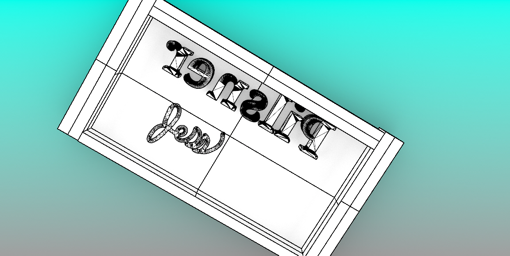
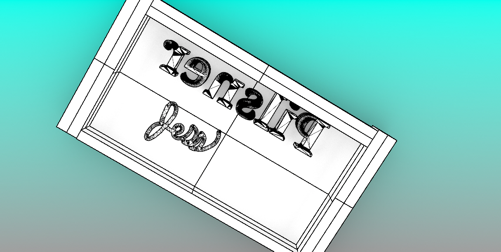

The Mold Epic
The Lamp

Molding and casting
- My first task of creating the initial model proved to be quite challenging as I mentioned in the previous assignment. Once I got the mold created off of that
I thought it would be smooth sailing. I was wrong.
- This week I went battle trying to figure out why, when I created a model it was printing concave instead convex as it looked in my model. I could tell in the slicer
that I had some issues, but I thought I had them in the one that printed correctly and it still looked convex. Alas, it kept printing concave and I had one print that just couldn not be printed.
I got a 3D printer monster.
- Eventually (after hours of tinkering) I got help from Junchau. He was able to quickly see I had some missalignment in one of the corners. He tought me a bout ctrl+shift recently which
has changed my Rhino life. With his help I was able to close the shape and learned a lot more about how to use Rhino. Finally, it printed correctly.
- I was able to successfully stir and pour my Oomoo without to much trouble. I let it set and was able to shake out my molds.
- I was nervous for pouring the the hot wax, I was afraid that it would still pout out the sides. It went okay with the help of an extra hand. It was a bit challenging
getting the candle string in, but I used the extra vent place to help.
- I had to let the wax cool in the fridge for around an hour before I could pour the next mold. But I am left with candles!
Final Project Proposal
Converting Learning to Middle School Lessons
For my final project I would like to convert what we have learned into middle school lessons. One of the ways I hope to do that is apply these concepts in CAD programs that better suite the middle school age developmentally. I plan to use Tykercad and 1 other opensource CAD program that my be simpler. Still researching which to use. I will have two core projects:
- Microbit robot: This will combine learning from the clip making assignment and the Meshy assignments. In this project students will have the base modle for legs on their robot (I will edit a custom mesh based off a thingyverse model) and then have to use cardboard and and 3D printed parts to build the rest of the robot. The editing of the Mesh will be done in Rhino to demonstrate my Rhino learning.
- The other assignment will be to make a 1 piece mold in Tynkercad (maybe bonus for two piece, I will need to learn the functionalty of Tynkercad.
This project will require me to:
- Use Rhino to personalize the Microbit robot leg mesh.
- Utlize lessons learned in the clip activity, but extend beyond that as I learn about accuracy and building in a new CAD programs. (TBD)
- I will use casting, 3D printing, and slicing as I learn to create molds in TynkerCad.
- In my final presentation I will overview what these assignments might look like at the middle school level

 
